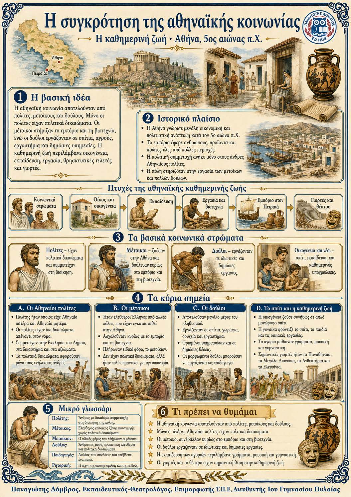

Πληροφοριογράφημα ενότητας
Το πληροφοριογράφημα αυτής της ενότητας δεν έχει ανέβει ακόμη. Οι σημειώσεις παραμένουν πλήρως διαθέσιμες.

Αθήνα, 5ος αιώνας π.Χ.
Η αθηναϊκή κοινωνία αποτελούνταν από πολίτες, μετοίκους και δούλους. Μόνο οι πολίτες είχαν πολιτικά δικαιώματα. Οι μέτοικοι συνέβαλλαν σημαντικά στο εμπόριο και στη βιοτεχνία, αλλά δεν συμμετείχαν στη διοίκηση. Οι δούλοι εργάζονταν στα σπίτια, στους αγρούς, στα εργαστήρια και σε δημόσιες υπηρεσίες. Η καθημερινή ζωή περιλάμβανε εργασία, εκπαίδευση, οικογενειακές υποχρεώσεις, θρησκευτικές τελετές και μεγάλες γιορτές.
Αθηναίοι πολίτες ↓ Πολιτικά δικαιώματα και συμμετοχή στη διοίκηση
